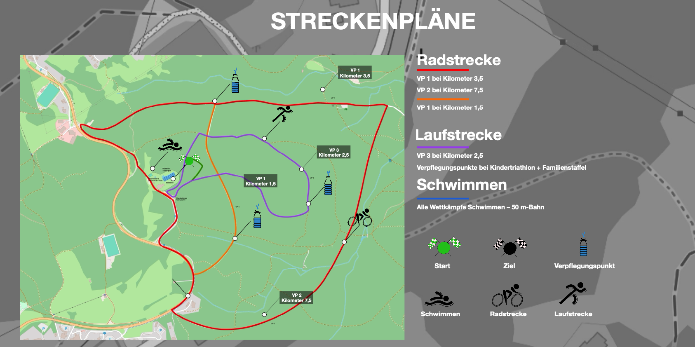

3. Waldtriathlon in Trainingen Sonntag, 15. September 2024
Der Zuspruch in den vergangenen Jahren war so groß: Deshalb soll der Waldtriathlon in unserem Ort nun ein regelmäßiges Sportereignis werden. Im SV Trainingen haben wir eine eigene Orga-Einheit gebildet. Und wir setzen in der heißen Phase vor und im Wettbewerb wieder auf viele ehrenamtliche Helferinnen und Helfer. Außerdem freuen wir uns über weitere Sponsoren, die bei der Finanzierung des Events helfen. Ein großer Dank geht an die Stadtwerke Trainingen, die auch dieses Jahr unsere Hauptförderer sind.
STRECKENPLÄNE

Radstrecke
VP 1 bei Kilometer 3,5
VP 2 bei Kilometer 7,5
VP 1 bei Kilometer 1,5
Laufstrecke
VP 3 bei Kilometer 2,5
Verpflegungspunkte bei Kindertriathlon + Familienstaffel
Schwimmen
Alle Wettkämpfe Schwimmen – 50 m-Bahn
AUSSCHREIBUNG
TERMIN
Sonntag, 15. September 2024
10 Uhr Auftakt mit Musik, Marktplatz
anschl. Wettkämpfe (zeitlich gestaffelt), Treffpunkt: Waldbad
18 Uhr Siegerehrung mit Musik, Bühne vor dem Waldbad
Wettkämpfe:
A Volkstriathlon klassisch (für Erwachsene): 600 m Schwimmen, 20 km Radfahren, 6 km Laufen, Startgeld: 35 Euro (*)
B Schnuppertriathlon (für Jugendliche 12–18 Jahre): 300 m Schwimmen, 10 km Radfahren, 3 km Laufen, Startgeld: 20 Euro (*)
C Kindertriathlon (ab 9 Jahren): 100 m Schwimmen, 2,5 km Radfahren, 500 m Laufen, Startgeld: Spende
D Familienstaffel (3 Personen, davon mindestens 1 Erwachsener und 1 Kind): 150 m Schwimmen, 5 km Radfahren, 1,5 km Laufen, Startgeld: 20 Euro (*)
(*) Jetzt mit 10 Prozent Frühbucherrabatt
Rahmenprogramm: Aufwärm-Aerobic (für alle Interessierten), Musik, Getränke- und Imbiss-Stationen, Verkauf von bedruckten T-Shirts, Stickern und Kaffeebechern
ZEITPLAN
Ab 9 Uhr: Startnummernausgabe, Marktplatz 10 Uhr: Auftakt mit Musik, Marktplatz (Es spielen die Traininger Spatzen.) 10.30 Uhr: Es kann losgehen: Wettkämpfe C und D
Start Schwimmen: Waldbad Wichtiger Hinweis: Es wird jeweils blockweise gestartet. Teilnehmende erfahren am Vorabend des Wettbewerbs unter www.waldtriathlon-trainingen.de ihre präzise Startzeit. Empfohlen wird, 20 Minuten früher vor Ort zu sein.
13 Uhr: Es kann losgehen: Wettkampf B
Start Schwimmen: Waldbad 15 Uhr: Es kann losgehen: Wettkampf A
Start Schwimmen: Waldbad Wichtiger Hinweis: Es wird jeweils blockweise gestartet. Teilnehmende erfahren am Vorabend des Wettbewerbs unter www.waldtriathlon-trainingen.de ihre präzise Startzeit. Empfohlen wird, 20 Minuten früher vor Ort zu sein.
13 Uhr: Zielschluss 15 Uhr: Siegerehrung mit Musik, Bühne vor dem Waldbad. Es legt auf: DJ Yankee
Mehr Info
Der Zuspruch in den vergangenen Jahren war so groß: Deshalb soll der Waldtriathlon in unserem Ort nun ein regelmäßiges Sportereignis werden. Im SV Trainingen haben wir eine eigene Orga-Einheit gebildet. Und wir setzen in der heißen Phase vor und im Wettbewerb wieder auf viele ehrenamtliche Helferinnen und Helfer. Außerdem freuen wir uns über weitere Sponsoren, die bei der Finanzierung des Events helfen. Ein großer Dank geht an die Stadtwerke Trainingen, die auch dieses Jahr unsere Hauptförderer sind.
Sportarten
A Volkstriathlon klassisch (für Erwachsene): 600 m Schwimmen, 20 km Radfahren, 6 km Laufen B Schnuppertriathlon (für Jugendliche 12–18 Jahre): 300 m Schwimmen, 10 km Radfahren, 3 km Laufen C Kindertriathlon (ab 9 Jahren): 100 m Schwimmen, 2,5 km Radfahren, 500 m Laufen D Familienstaffel (3 Personen, davon mindestens 1 Erwachsener und 1 Kind): 150 m Schwimmen, 5 km Radfahren, 1,5 km Laufen
Anmeldung
WETTKAMPFORDNUNG
§ 1 Grundlage und Einordnung
1.1 Die vorliegende SpO wurde vom Präsidium der DTU am 14.01.2024 genehmigt.
1.2 Die SpO ist eine weitere Ordnung im Sinne des § 4 Abs. 2 der Satzung der DTU.
1.3 Die DTU hat die SpO für die wettkampfmäßige Ausübung der DTU-Sportarten in Deutschland dergestalt beschlossen, dass sie mit den zwingenden Normen des Regelwerks der World Triathlon (WT) und der Europäischen Triathlon Union (ETU) übereinstimmt und dennoch deutschlandspezifische Gegebenheiten und Erfordernisse berücksichtigt.
1.4 In Fällen, in denen die SpO keine Regelung trifft, sind bei Deutschen Meisterschaften, Qualifikationswettkämpfen für internationale Meisterschaften sowie für die Wettkämpfe der Triathlon-Bundesliga (1. und die 2. Bundesligen) und Regionalligen ergänzend die Regeln der World Triathlon heranzuziehen.
1.5 Teilnehmer an Wettkämpfen gemäß § 2.2 dürfen nur mit entsprechenden gesundheitlichen Voraussetzungen an den Start gehen. Die Verantwortung hierfür trägt jeder Teilnehmer selbst.
KONTAKT
SV Trainingen e. V.
Übungsstraße 1
98765 Trainingen
Vertretungsberechtigter Vorstand: Ulrike Maschter
Tel: 01234/5678-11
Amtsgericht Lörrach, VR 1001